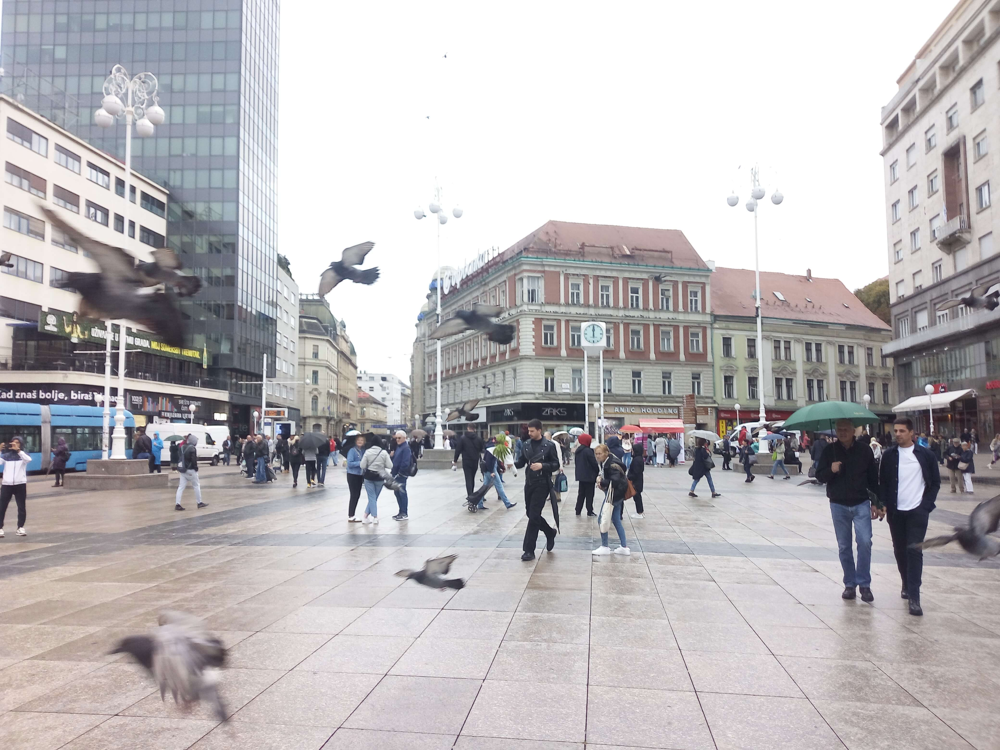

City View
Zagreb · Croatia
Zagreb offers a distinctive cityscape where historic architecture, elegant rooftops and green spaces come together. From its charming streets to its wider urban views, the Croatian capital reveals a character shaped by different architectural periods and a lively city atmosphere. The city's skyline reflects its rich Central European heritage, with historic buildings and distinctive rooftops creating a memorable urban landscape. Looking across Zagreb provides a glimpse of its historic centre and the everyday rhythm of life in the city. Its combination of traditional architecture and modern urban life gives the city a character of its own. These photographs capture my personal impressions of Zagreb and its surrounding cityscape, preserving memories of the places and views I discovered during my visit.
My Photo Gallery
A collection of personal photographs capturing the city views, architecture and atmosphere of Zagreb.
View All Photos ↗